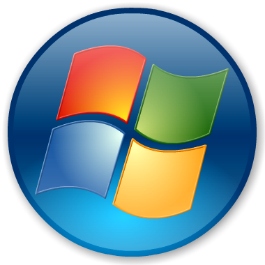
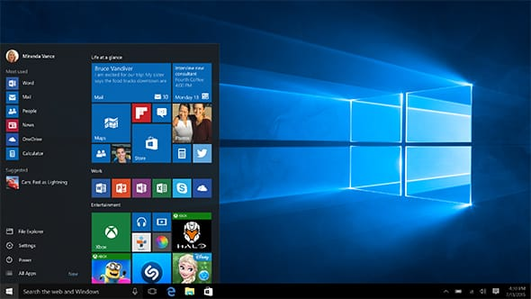

Microsoft Windows
Windows predstavlja naziv za niz operacijskih sustava tvrtke Microsoft koju su osnovali Bill Gates i Paul Allen 1975. godine, a jedan od glavnih ciljeva im je bio upravo razvoj operacijskog sustava. Operacijski sustav koji je bio preteča „pravog“ Windowsa bio je MS-DOS, skraćeno od Microsoft Disk Operating System. Prvi put je upotrijebljen na IBM-ovom računalu 1981. godine. Sustav se, kao što i samo ime govori, temeljio na upravljanju diskovima i nije imao nikakvo grafičko sučelje. Naredbe su se unosile putem tipkovnice te su se tim putem također i pokretale aplikacije. MS DOS je dominirao tržištem sve do pojave Windowsa. Što se programerskih mogućnosti tiče, DOS je bio bolja varijante od Windowsa koji slijedi iza njega.


Sustav Windows 1.0 16-bitni je sustav koji se pojavio 1985. godine i to je bio prvi pokušaj uvođenja multi-taskinga u grafičko sučelje na PC-u. Naslijeđuje ga Windows 2.0 koji je bio značajan po mogućnosti preklapanja aplikacija te minimiziranju i maksimiziranju prozora te je podržavao Word i neke slične programe.
Nama poznatiji i zasigurno bliži sustav svakako je Windows 95 koji se temeljio na izgledu Windowsa 3.1, a predstavljan je još i pod imenom 4.0. Napravljen je s ciljem spajanja DOS i Windows proizvoda. Postavljena je i automatska konfiguracija što je priču činilo dodano zanimljivijom. Svakako je jedan od najprodavanijih operacijskih sustava ikad napravljenih, a izgledom ne odstupa značanije od današnjeg izgleda Windows sustava.

Windows 95 naslijedio je Windows 98 koji je napravljan s nekoliko propusta koji su ispravljeni u naknadno puštenoj Windows 98 Special Edition verziji. Imao je bolju podršku za USB te je dolazio s novom verzijom Internet Explorera koju je odlikovala veća brzina. Neki korisnici nisu bili zadovoljni što prijelaz na Windows 98 SE nije bio besplatan, što je možda trebao zbog spomenutih grešaka u običnom sustavu 98.
Novi sustav koji je obilježio ulazak u novo tisućljeće bio je Microsoft Windows Me (Millennium edition). U njemu je Microsoft nadogradio korisničko sučelje, unaprijedio Windows Explorer, koristio noviji Internet Explorer, Windows Media Player 7 te novi Windows Movie Maker software koji je omogućavao osnovno uređivanje svim korisnicima.
Kada bi nekome rekli da nabroji 2-3 verzije Windowsa, jedna bi najvjerojatnije bila XP. Windows XP dobio je naziv prema skraćenici engleske riječi experience (iskustvo). Izašao je u dvije inačice, Home Edition i Professional. Professional je donosio mogućnosti podrške za dva procesora, mogućnost promjene jezika nakon istalacije, ograničenje pristupa i još ponešto. Stoga je bila vidljiva razlika u cijeni između Home Editiona i Professionala koji je imao više mogućnosti te zbog toga bio i na cjenovno višoj razini. Ovim sustavom većina korisnika bila je oduševljena te je Microsoft napravio petogodišnju stanku do izdavanja nove inačice Windowsa.
2006. godine izlazi Windows Vista temeljena na sustavu Windows Server 2003. Predstavljala je totalni preokret zbog znatno unaprijeđenog sučelja koje je omogućavalo ikone i sličice uživo i animacije. Shell, odnosno ljuska sustava bila je promijenjena te je omogućavala nove načine ptretraživanja i organizacije u sustavu. Bilo je omogućeno čak i glasovno upravljanje, međutim na samo nekoliko jezika. Windows update sistem omogućavao je provjeru ažuriranja preko control panela, a ne preko weba kako je to bivalo na prošlim sustavima.

Windows 7 naslijedio je Vistu, a dostupan je u 32 i 64-bitnoj verziji. Windows 7 sustav je koji je zapravo preoblikovana Windows Vista. Budući da Vista nije ispunila mnoge od predviđenih sposobnosti, taj problem rješava Windows 7. Windows 7 ima poboljšane performanse s višejezgrenim procesorima, podršku za uporabu više grafičkih kartica raznih proizvođača, a Windows Media Center je također novost.
Windows 8, prema mojem mišljenju, sustav je koji zasigurno zadaje glavobolju korisnicima naučenim na Windows 7 te starije verzije zbog djelomice drugačijeg sučelja i nekih funkcija u sustavu. Tako Windows 8 dolazi sa novim početnim zaslonom, podrškom za USB 3.0 priključak, Internet Explorerom 10 te sustavom zaštite Windows Defender. Konfiguracija koja je potrebna Windowsu 8 gotovo se uopće ne razlikuje od one koja je potrebna Windowsu 7.
Windows 10 najnoviji je Microsoftov operacijski sustav. Objavljen je u ljeto 2015. godine, a korisnici čija računala pokreću Windows 7 ili 8 mogli su besplatno nadograditi sustav u prvoj godini nakon objavljivanja. Ovaj sustav napravljen je kao poveznica između Windows računala, Windows Phonea te Xbox One uređaja. Windows 10 ima mogućnost veće integracije sa Microsoftovim platformama preko pametne pomoćnice Cortane, a Microsoft Edge internet preglednik svakako je još jedna od važnijih novosti, iako sustav još uvijek sadrži Internet Explorer, no to je samo kompatibilnosti radi.
